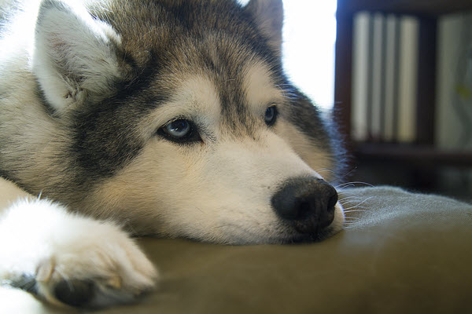

About the Siberian Husky
The Siberian Husky is a medium-sized dog that originated in Siberia. The Chukchi people were the first to breed Siberian Huskies, who relied on the dogs help for everyday tasks. Males weigh 45-60 lbs. and females weigh 35-50 lbs. The breed is a member of the Spitz genetic family, characterized by thick double coats, unique markings, and erect, wolf-like triangular ears.
The Siberian Husky is a highly active, intelligent, and resilient breed, whose ancestors were accustomed to the extreme cold and harshness of the Siberian Arctic. Siberian Huskies come in a variety of coat colors and patterns, almost always offset with white. While the most common coat color is black and white, they also come in red and white, all white, grey and white, and the less common agouti coloring. Huskies can also have spotted markings called piebald and striking masks.